2026.05 — 2026.08
AI 产品经理实习生（AI 工程）
字节跳动 · TikTok LIVE（内容与本地化方向）
分析 159,629 条历史文案，识别 38.0% 完全重复内容，结合用户访谈确定 AI 改写方向、需求优先级与验收指标；设计“原文 TM 基线 → 条件门禁 → AI 改写 → TM 复核 → 人工确认”流程，独立开发 Chrome MV3 工具并推进 3,733 条文案 Pilot。
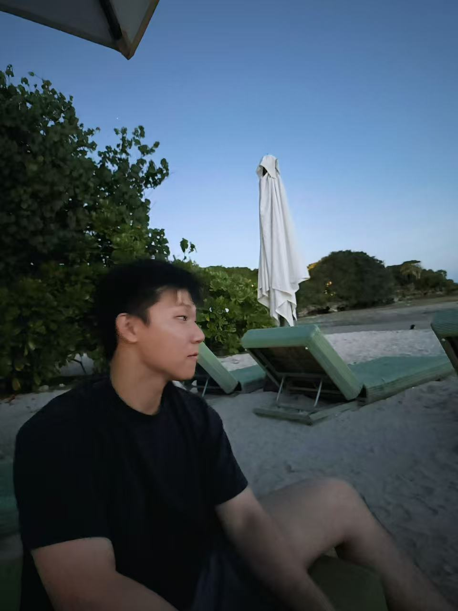
AI 产品经理 · 产品经理
YEGEN Wu
把模糊的业务问题拆成流程、规则和可验收的结果，再用原型和数据验证它值不值得做。
做过 AI 工作流、B 端数据平台，以及 VR 仿真环境中的用户实验。
我能带来什么 / What I Bring
从用户任务和数据找切入点：分析 159,629 条历史文案找复用机会；用访问、搜索、注册、支付 4 段漏斗定位流失环节。
自己把方案做到能跑：Chrome MV3 插件加 Python 本地服务，串起翻译记忆库、AI 改写与飞书表格；用 Unity 搭建 VR 实验软件。
指标对应真实任务，分母说清楚：Pilot 分开看生成覆盖和人工可用；20 人对照实验分开看识别率、反应时和偏好。
工作方法：确定性交给规则，生成交给模型，价值用可检查的指标证明；自己负责的、平台提供的、还没验证的分开说。
所有项目 / All Work
01 · AI 产品
多语言 AI 文案协作助手
AI 改写 + 三次 TM 复核 + 人工确认，从需求到 3,733 条文案 Pilot
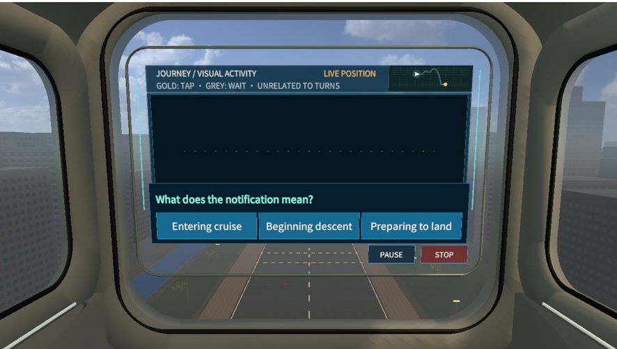
02 · 毕业研究 · 已完成
VR 乘客声音提示研究
20 人 VR 对照实验：乘客看屏幕时，短提示音和语音哪种更容易听懂

03 · 商业产品 · 实习
CCM 农化数据平台
农化行业 B2B 数据平台：搜索策略、转化漏斗、注册会员与支付
04 · AI Agent
股票研究 Agent
规则引擎算事实，检索增强补判断，GitHub Actions 每天自动出报告
05 · AI 工具产品
AI 研究工作流助手
帮助研究者梳理文献综述流程，完成去重、数字校验和论文材料整理
06 · AI 工作流
多语言内容查询助手
帮助团队查询不同语言的内容、整理结果并交付到表格
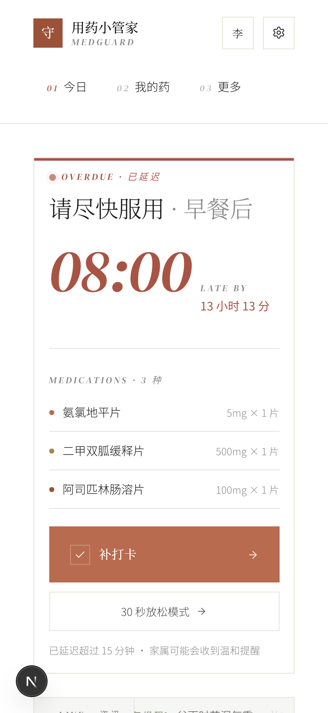
07 · 前端实现
守 MedGuard
慢病用药管理——设计语言 + Next.js 15 全栈实现，Vercel 部署上线

08 · VR 界面
SKY SOAR
飞行焦虑缓解——Apple Vision Pro VR 模块，8 个核心界面从 Wireframe 到 Hi-Fi Prototype
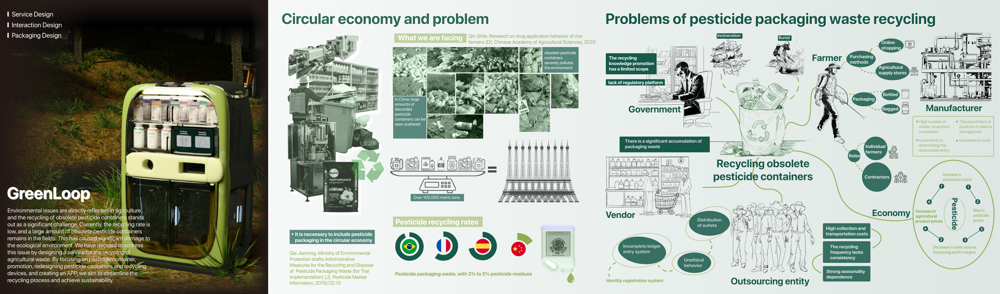
09 · 本科毕业设计
Greenloop
农药包装废弃物回收服务系统——从田野调研到三条产品线全链路设计
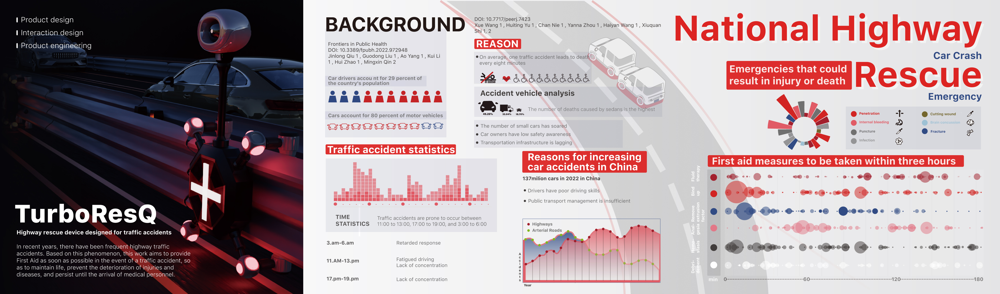
10 · 硬件原型
TurboResQ
高速公路智能救援装置——Arduino 三模式硬件 + Blender 三维 + App UI

11 · 交互装置
Shamanic Echoes
脑波驱动的萨满仪式沉浸装置——TouchDesigner + Arduino + Kinect2
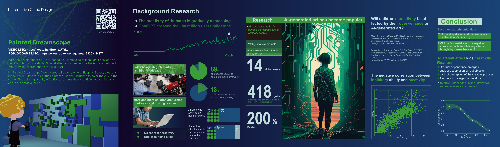
12 · 游戏设计
Painted Dreamscape
对抗 AI 同质化的儿童 UGC 创造力游戏——从玩法机制、玩家体验到 Roblox 上线
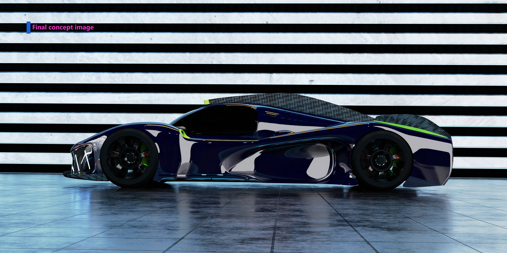
13 · 汽车设计
Lance Lightning
夜行者概念跑车——从骑士头盔汲取灵感，草图推演到最终渲染
工作 / 实习经历
2026.05 — 2026.08
字节跳动 · TikTok LIVE（内容与本地化方向）
分析 159,629 条历史文案，识别 38.0% 完全重复内容，结合用户访谈确定 AI 改写方向、需求优先级与验收指标；设计“原文 TM 基线 → 条件门禁 → AI 改写 → TM 复核 → 人工确认”流程，独立开发 Chrome MV3 工具并推进 3,733 条文案 Pilot。
2025.02 — 2026.01
广州西美信息科技有限公司 · 农化行业 B2B 数据平台（CCM）
参与搜索、注册、会员与支付链路：设计 3 层搜索策略，搭建访问、搜索、注册、支付 4 段漏斗并定位货币切换导致的支付流失；完成 PRD、原型、异常分支与验收标准，协同研发上线与复盘。
2024.05 — 2024.08
新华社
参与 App 改版，完成响应式页面、交互原型与数据可视化动效设计，并与开发团队对齐交互还原标准。
2023.07 — 2023.09
优农服科技发展（广东）有限公司
参与 ERP 系统核心流程梳理，完成可视化页面、交互逻辑和接口文档，推动 3 个模块从需求到上线。
2021.01 — 2021.02
四川科库科技有限公司
完成农村实地调研与农户访谈，梳理农药包装回收痛点，为后续服务设计提供用户洞察。
农化行业 B2B 数据与研究平台 / cnchemicals.com · 注册 → 浏览 → 决策 → 支付
农化行业的 B2B 客户靠行业数据和研究报告做采购与市场判断，但报告多、路径长。我要解决的是：专业用户怎样更快搜到需要的内容，并顺利完成注册、开会员和付款。
CCM 主页 — 以农化为核心的垂直行业数据与研究平台
我的角色
产品经理实习生
2025.02 — 2026.01 · 需求、原型、验收，研发负责实现
覆盖链路
注册 / 登录 · 账户体系
浏览 · 搜索 · 筛选
产品详情 · 决策支持
购物车 · 结算 · 支付
产品规模
15,918 条行业内容
以农化行业为核心
全球 B2B 专业用户
线上真实运营
工作过程
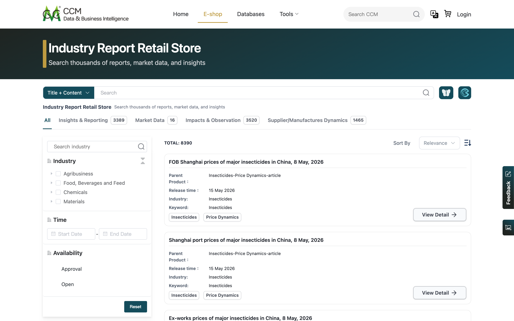
E-shop · Industry Report Retail Store — 四维 Tab 分类 · 行业树形筛选 · 时间范围过滤 · 1778 条报告可购
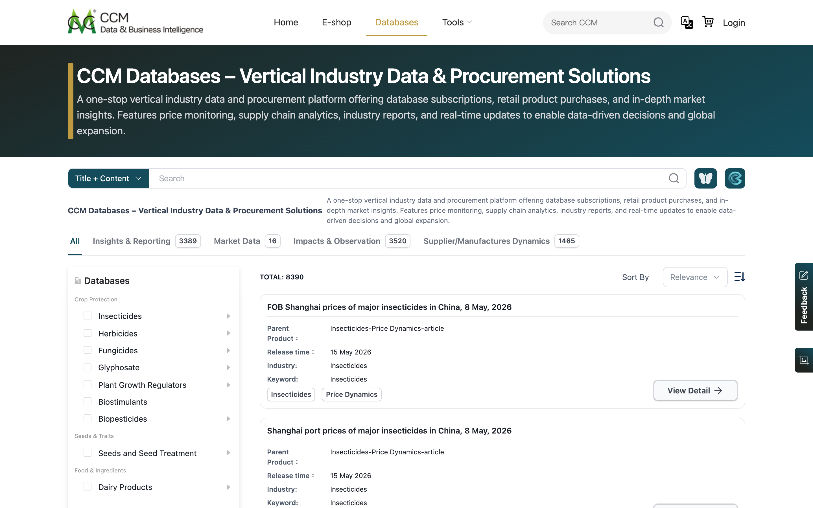
Databases · Vertical Industry Data & Procurement Solutions — 数据库订阅 · 行业报告 · 实时市场数据
关键产品决策
项目成果
农药包装废弃物回收服务系统 / 重庆大学本科毕业设计
2019 年中国农药使用量达 139.1 万吨，废弃物大多随意丢弃于田野——回收率不足 30%，土壤与地下水污染持续加剧。一个完整的系统性缺口，正在等待被设计来解决。
项目概览 — 服务设计 · 交互设计 · 包装设计三位一体
设计过程 / Design Process
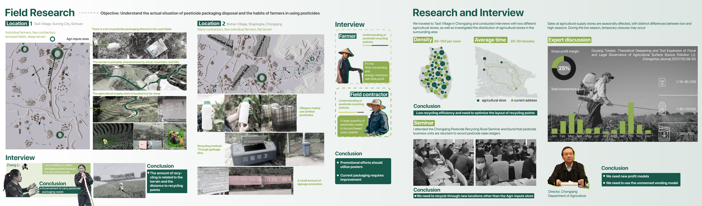
田野调研 — 桃李村实地勘探 · 农户访谈 · 农资店调研 · 政府部门对话
关键研究结论
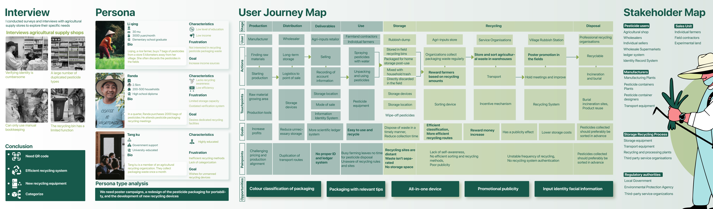
用户画像 · 用户旅程图 · 利益相关者地图 — 完整的研究产出
关键设计决策
旅程图揭示了一个关键矛盾：农户知道应该回收，却没有便捷的路径去执行。基于此，产品设计方向从"教育引导"转向"降低行动门槛"——将回收站整合进购药场景，让回收与购药在同一设备完成，无需农户额外出行。
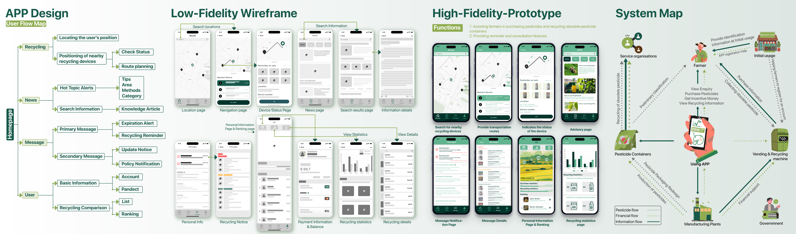
App 设计全过程 — 用户流图 · 低保真线框 · 高保真原型 · 系统地图
高保真 App 界面 — 7 个核心页面

回收地图

附近装置

装置详情

消息通知

待回收清单

个人账户
绿色主调色彩系统 · 地图 + 列表 + 消息 + 账户四大模块 · 回收全流程数字可追溯
一体化回收收购装置 — 五面渲染
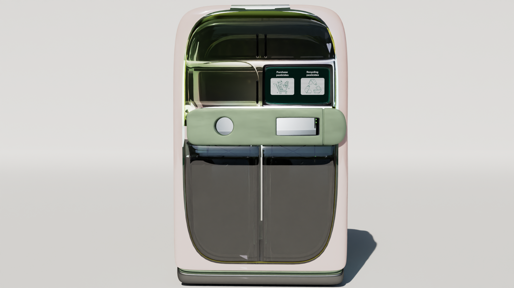
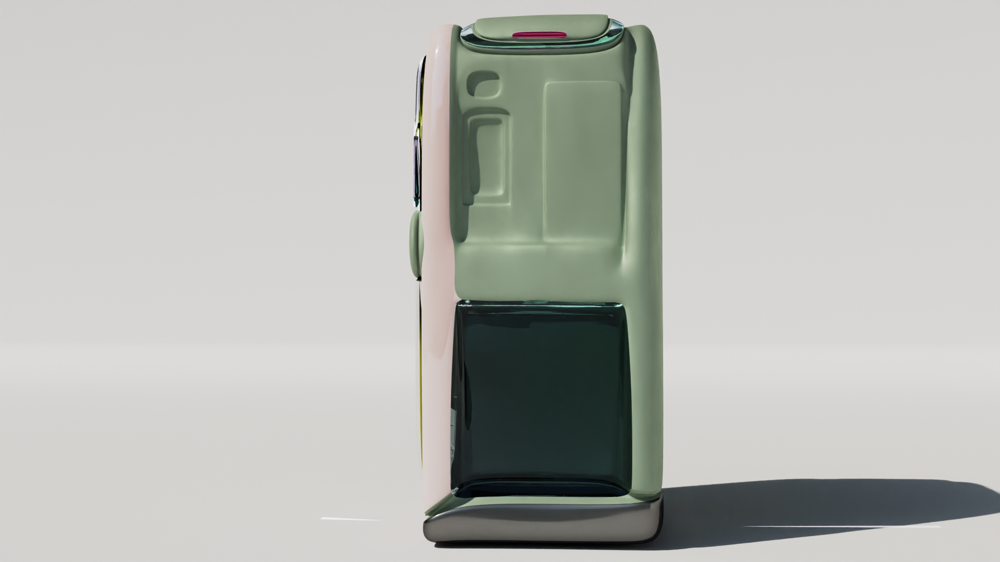
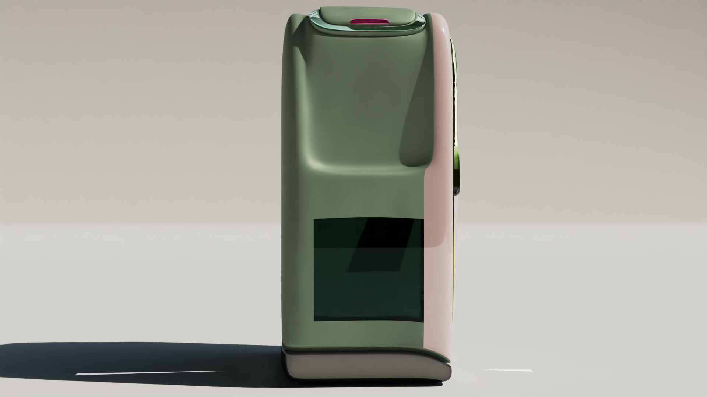
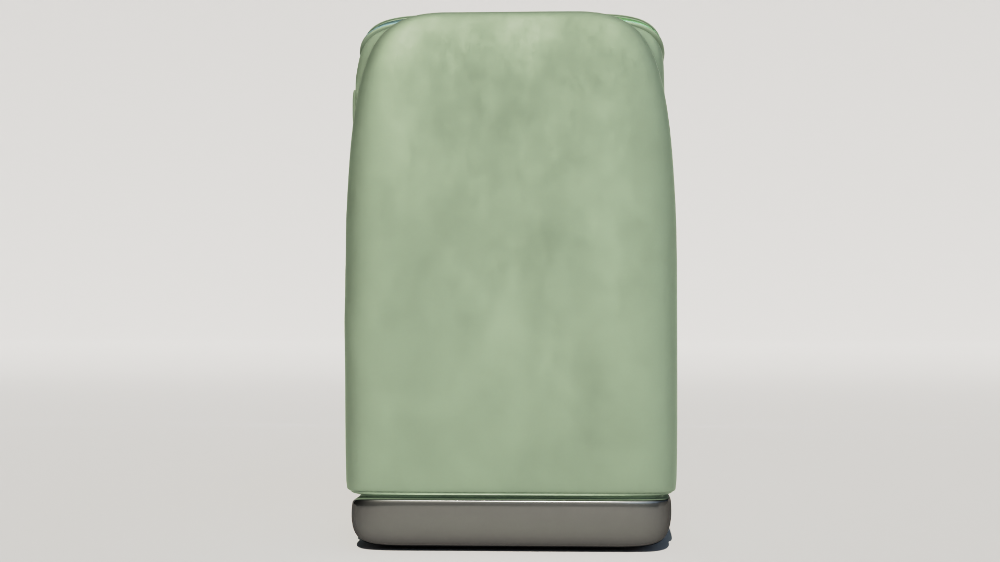
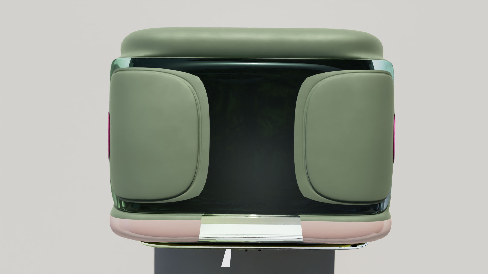
正面 · 左侧 · 右侧 · 后侧 · 顶视 — 一体化购药回收装置，将回收行为嵌入购药场景
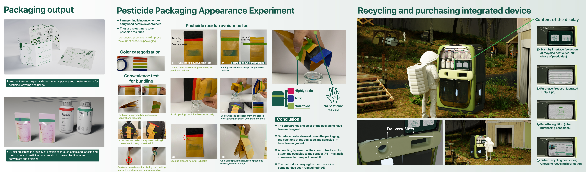
包装重设计 · 外观实验 · 回收装置实景 — 三位一体的系统落地
包装重设计逻辑
通过颜色分类区分毒性等级，设计捆绑胶带开口避免农药残留污染（实验验证单侧开口确保无残留流出），重新设计包装使农户便于携带与归还——让「包装本身」成为回收系统的一部分，而非障碍。
设计成果
飞行焦虑缓解系统 / Apple Vision Pro VR 界面设计
飞行恐惧症（Aviophobia）影响全球约 25% 的旅客，而现有机舱几乎不提供任何情绪支持——乘客在封闭空间、失控感与高空焦虑中独自应对，没有实时的状态反馈，没有有效的干预手段。
为什么这样研究 / Research Rationale
JTBD 分析框架 — 三类用户的核心「待完成任务」
| 用户类型 | Situation（情境） | Motivation（动机） | Expected Outcome（期望结果） |
|---|---|---|---|
| 知情控制型 需要掌握飞行信息来保持平静 |
起飞后感到失控，不知道飞机在哪、飞多快、有无气流 | 通过掌握信息减少未知感，用理性压制恐惧 | 随时查看飞行状态，感觉自己在「参与」飞行，而非被动承受 |
| 注意力转移型 需要分心来避免焦虑螺旋 |
飞机颠簸或长时间飞行，无法集中注意力做其他事 | 用沉浸式内容占据认知资源，打断焦虑思维链 | 在飞行中体验目的地或冥想，飞机降落时回想「其实没那么可怕」 |
| 生理干预型 需要主动调节身体反应 |
心跳加速、手出汗、呼吸急促，明知不危险却控制不住身体 | 通过呼吸、冥想等方式直接干预生理焦虑症状 | 呼吸练习后心率下降，感受到对身体的重新掌控感 |
我的角色
VR 模块界面设计
Apple Vision Pro 全部界面
系统三端
iPhone — 音频引导 · 航班追踪
Apple Watch — HRV 监测 · 冥想
VR — 沉浸式体验（我负责）
课程背景
悉尼大学界面设计课程
A3 最终提案
设计过程
高保真原型全览 — 8 个核心页面 · 设计迭代记录 · 启发式评估文档

情境 Mock-up — 以人为中心的情感设计策略，在飞行场景中缓解焦虑
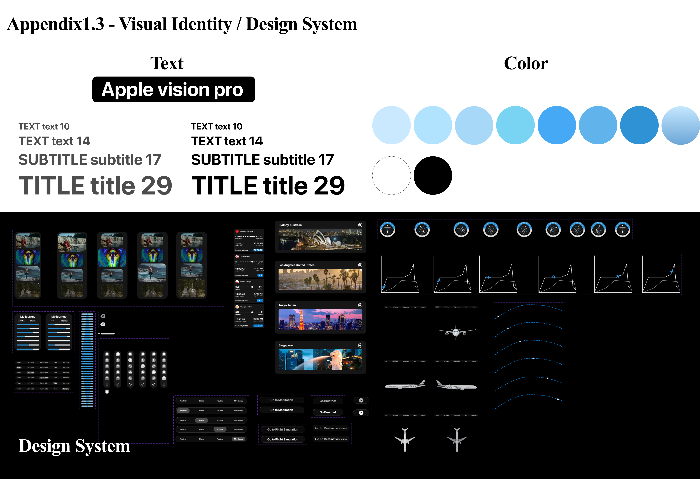
Apple Vision Pro 设计系统 — 蓝色渐变调色板 · 双字重体系 · 深色界面规范
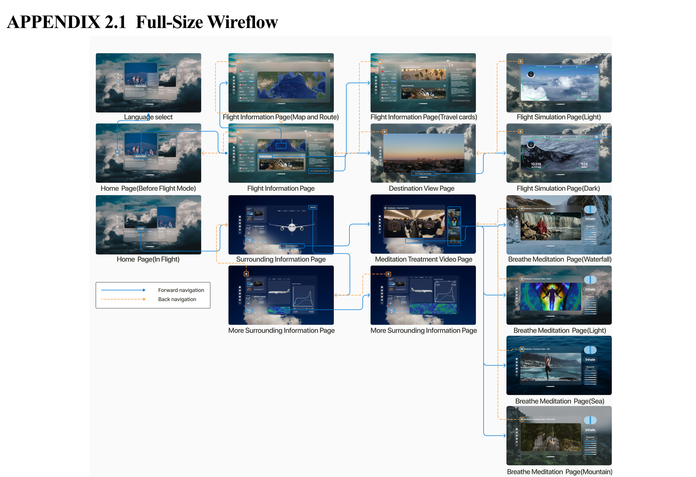
完整 Wireflow — 前向与返回导航清晰标注
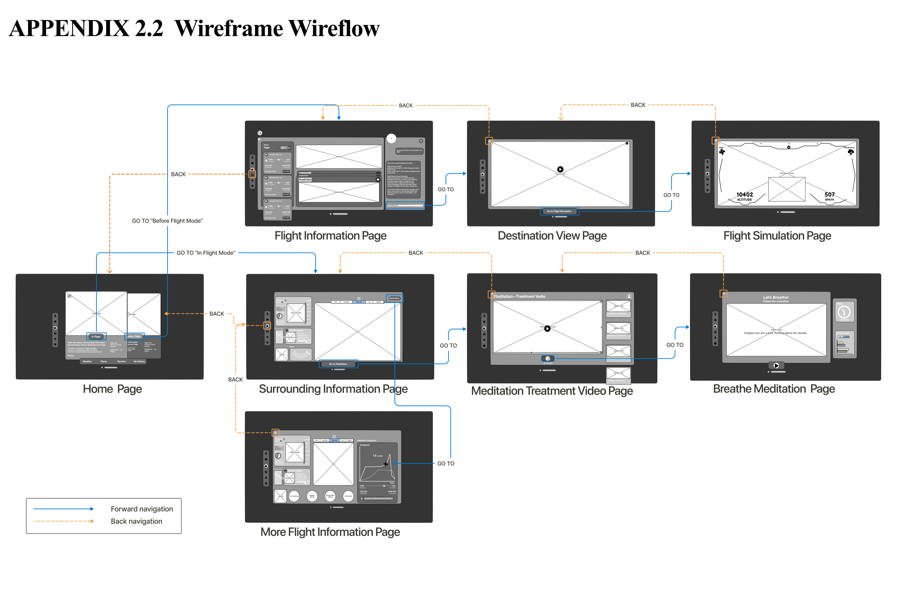
低保真线框 — 7 个页面的布局与导航结构
VR 八大核心界面
双状态首页，根据飞行阶段切换内容。简洁卡片式布局让用户快速找到所需功能，避免焦虑状态下的认知负荷。
实时航班状态、路线地图、当前速度与高度——让乘客对飞行状态保持「知情感」，直接对抗失控感引发的焦虑。
目的地全景图像沉浸展示，将注意力从「当下恐惧」转移至「即将到达的美好」，利用正向预期缓解焦虑。
真实飞行视角模拟，HUD 风格界面显示飞行参数。双色模式适配不同光线偏好，让用户主动「参与」飞行体验。
实时展示飞机三维位置、引擎状态、燃油、高度、气流预报等详细数据，满足高知情需求用户的信息渴望。
情境化冥想视频库，清晰的视频缩略图 + 时长标注，「Go Breathe」按钮进入引导呼吸。修复：增加操作说明 tooltip。
三套自然场景配合 Inhale/Exhale 动画引导，利用视觉沉浸降低生理焦虑反应，进度条显示呼吸节奏。
飞行途经地区的文化、地理、天气信息，用好奇心替代恐惧情绪，为长途飞行提供持续的注意力转移内容。
设计成果
面向中老年慢病患者的用药管理应用 / HCI 课题设计 + 前端实现 · medguard-green.vercel.app
慢病患者用药依从率长期低于 50%，现有的提醒类工具大多设计冷漠、信息密集，对中老年用户形成认知障碍——「按时吃药」应该是件简单、温暖、不焦虑的事。
设计过程
设计语言 · 色彩系统
字体：标题 Noto Serif SC + DM Serif（衬线体，增加温暖感），正文轻量无衬线。规则：无圆角、无投影，靠 1px 边框分隔信息层级——刻意回避医疗类 App 的冰冷视觉语言。
三大核心页面 · 实机截图（Next.js 实现）
真实运行界面 — Next.js 15 + TypeScript + Tailwind CSS 独立开发
Hero 区显示下次用药时间；时间线展示 4 个服药时段（早/午/晚/睡前）；一键打卡自动减少库存；全部完成后进入 30 秒沉浸呼吸放松（配音乐）
添加药品（真实表单）；库存随打卡自动减少；续方复诊月历；点击日期标记/改期/删除；「加入日历」下载 .ics 文件（iOS / Outlook / Google 全兼容）
邀请链接一键生成；家人可查看打卡进度、库存风险、漏服提醒；隐私保护——家人看不到具体药品名称和处方内容
7 天依从率趋势图；每日个性化建议（如「把午餐后用药提前 8 分钟」）；一键采纳建议，时间线立刻更新；数据仅存本地，不上传服务器
设计成果
高速公路智能救援装置 / 产品设计 + 硬件原型
高速公路事故黄金救援时间约 1 小时，但专业救援平均到达需要 20 分钟以上——这段空白期，没有任何有效的现场早期干预手段，每分钟都在消耗生存概率。
TurboResQ — 项目总览与概念说明
设计过程
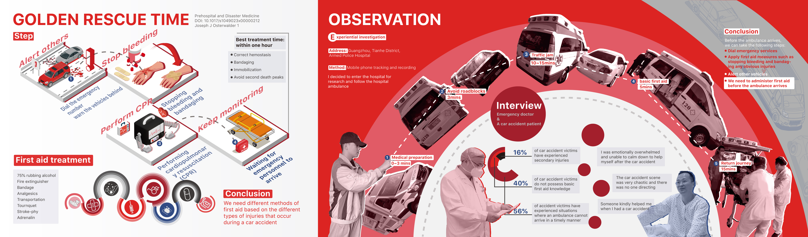
场景研究 · 黄金救援时序分析
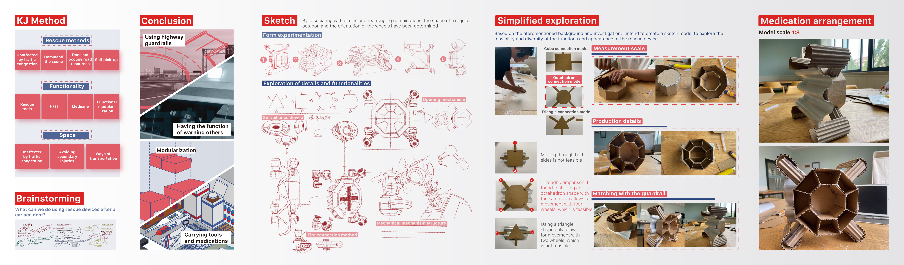
KJ 分析 · 概念草图 · 纸模型迭代
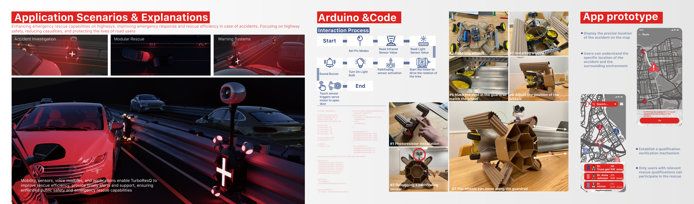
Blender 三维模型 · 三种救援模式
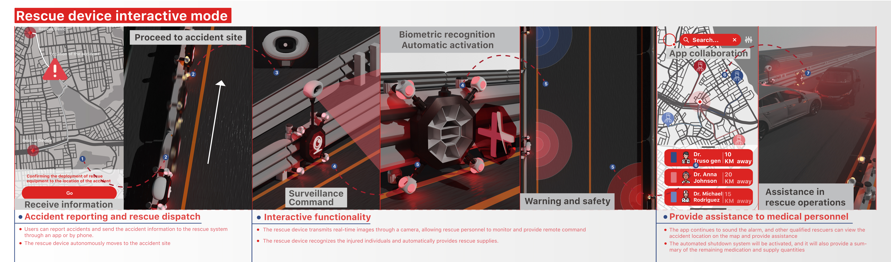
7 步使用流程 · App 联动场景模拟
设计成果
实验性项目 / Experimental Work
以下两个项目探索技术与艺术的边界——一个让脑电波成为艺术语言，一个用游戏对抗 AI 同质化。
of the Raptor / 脑波驱动的萨满仪式互动装置
如何让萨满鹰神仪式中的意识状态，通过当代技术转化为观众可感知的沉浸性体验？
萨满鹰神交互装置 · 项目总览

以鹰神图腾为灵感的装置素描

铁艺装置制作 · 脑波传感器调试

现场演出 · 舞者动作触发实时视觉
技术栈
TGAM 脑波传感器
Arduino 控制光带
Kinect2 体感追踪
TouchDesigner 实时视觉
投影映射
设计逻辑
研读萨满意识文献，提炼激活鹰神连接的仪式方法；以铁艺装置承载灵性意象；舞者动作 + 观众脑波双重输入，制造多层次沉浸层叠感
对抗 AI 同质化的儿童创造力游戏
AI 艺术工具的广泛普及正在削弱儿童的原创想象力——过度依赖 AI 生成图像，导致人类的色彩感知与创造意愿逐步退化。
Painted Dreamscape · 游戏设计总览
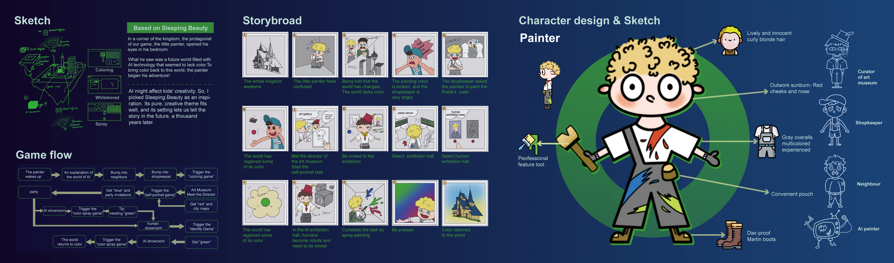
关卡设计 · 小画家角色设定
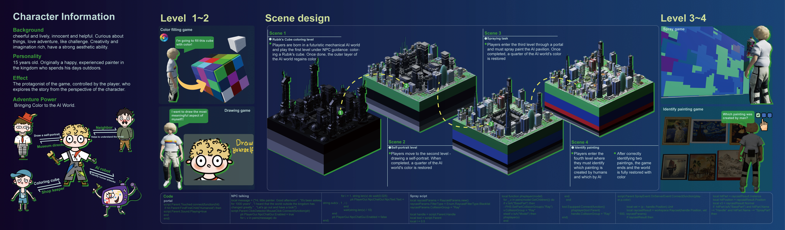
Blender 场景建模 · 四个关卡可视化
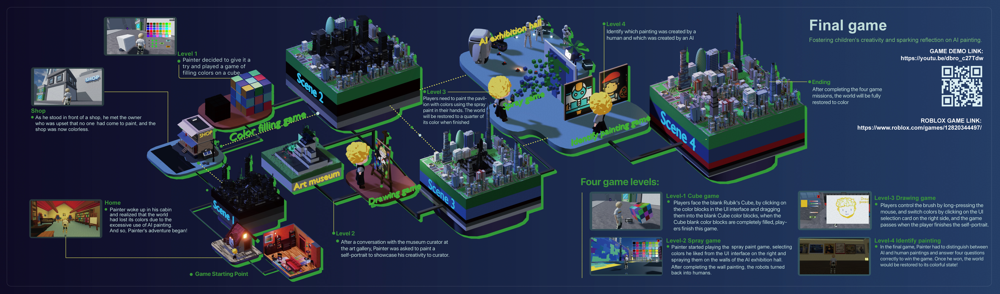
Roblox 引擎实现 · 游戏全流程
4 个关卡
Level 1 · 色彩填充
Level 2 · 绘画接龙
Level 3 · 场景重建
Level 4 · 自由创作
研究驱动
访谈证实 AI 对儿童想象力的影响；儿童绘画实验提供实证数据；基于《睡美人》构建游戏叙事，证据驱动而非假设驱动
上线链接
Roblox 公开发布
youtu.be/dbro_c27Tdw
夜行者概念跑车设计 / 从草图推演到最终渲染
为夜间独行者设计一台跑车——不是张扬的速度象征，而是流线型的追逐工具：夜色中的猎影，骑士护甲下的力量感，沉默而凌厉。
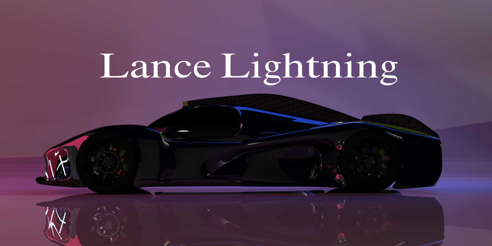
Lance Lightning — 概念跑车设计
设计推演过程
Stage 1 · Racing Night 概念
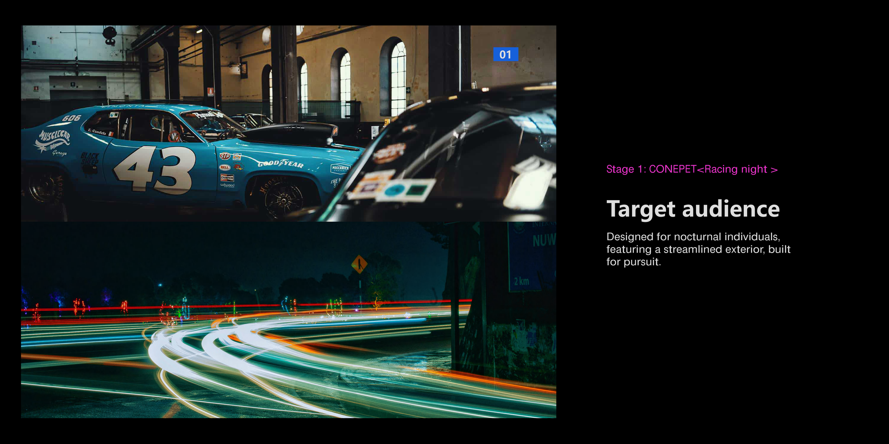
Stage 1 — Racing Night · 夜行者概念草图与主题定义
Stage 2 · Knight's Helmet 灵感
灵感转化逻辑
从马鬃与赛马中汲取动态张力，融合中世纪骑士头盔的结构设计元素——将甲胄的力量感与流线美学转化为车身曲面的收束与释放，赋予车型「庄重而凌厉」的气质。
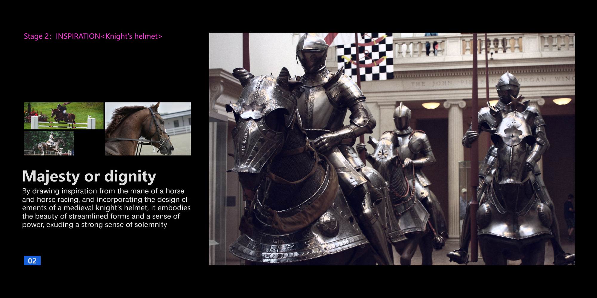
Stage 2 — Inspiration · 骑士头盔灵感转化 · 流线形态的力量感与庄重感
Stage 3 · 草图推演
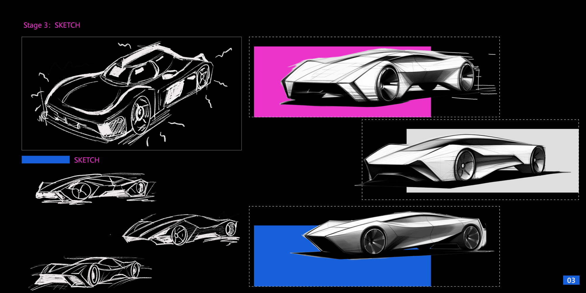
多视角手绘草图 — 侧视图形态推演
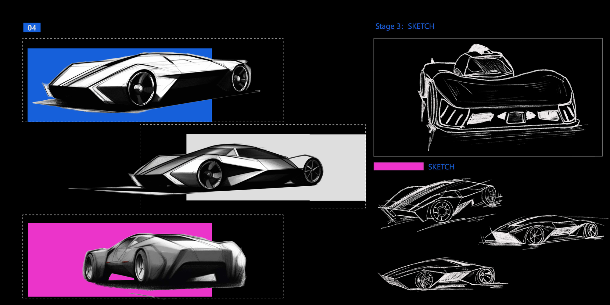
细节推敲 — 车头造型 · 灯组设计 · 曲面关系
最终概念渲染
Final Concept — 正侧面渲染 · 流线车身 · 骑士甲胄美学
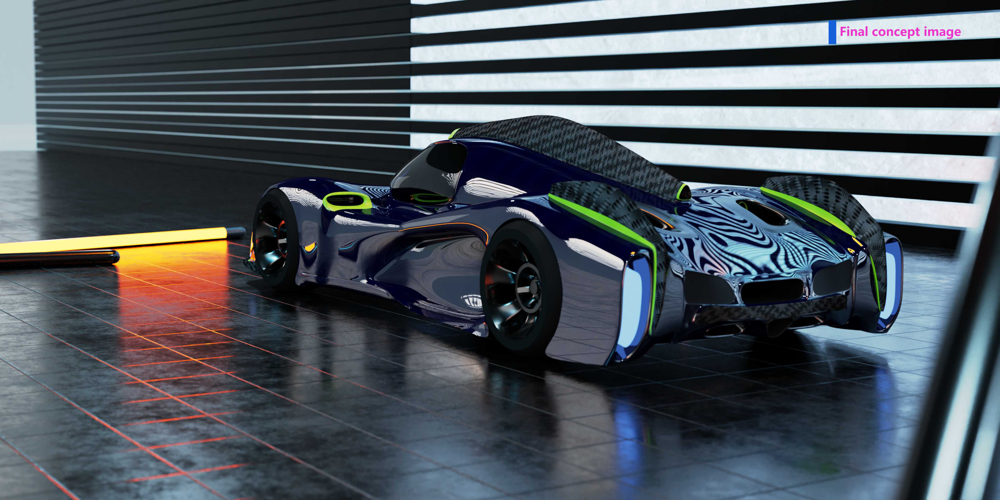
四分之三视图 — 车头 · 引擎盖线条
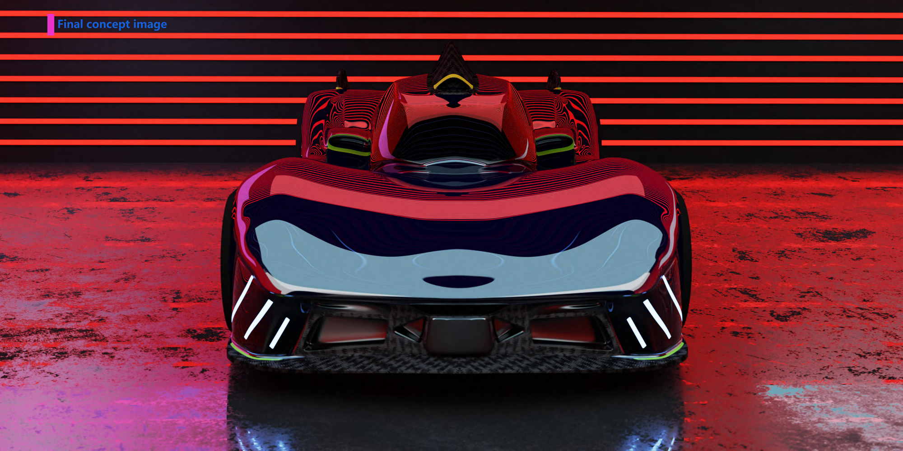
后视图 — 尾部造型 · 排气布局
设计成果
帮助研究者更有条理地完成文献综述任务 / GitHub repository
学术 scoping review 的写作流程繁琐且容易出错——多数据库手动去重、PRISMA 数字对不上、research questions 无法落地到 data charting、Results 与 Discussion 边界模糊。这不是研究者的问题，是工具链的缺失。
产品背景
作为 HCI 研究方向的学生，我在参与 scoping review 写作时发现：研究者花大量时间在机械性工作上（去重、数字校验、格式转换），而这些完全可以被自动化。同时，AI 写作工具的最大风险是「编造证据」——我决定把「不编造」设计为 skill 的核心约束，而非一条补充说明。
产品设计过程
文件架构（产品结构设计）
SKILL.md — 主入口，完整工作流与触发逻辑（2000+ 行）
review-framework.md — RQ 设计、搜索策略、三阶段筛选、charting schema
evidence-discipline.md — 证据约束规则，防止 overclaim
acm-latex-rules.md — ACM/Overleaf LaTeX 格式规范（含图表模板）
rq-synthesis-patterns.md — RQ-based Results 写作模板
submission-checklist.md — CHI / IMWUT 投稿检查清单
deduplicate.py / prisma_flow.py — 自动化脚本，支持 Claude Code 直接调用
设计成果
帮助团队查询不同语言的内容、核对结果并整理到表格 / GitHub repository
查询一条译文看似简单，真实工作却包含输入识别、权限项目发现、精确与模糊召回、57 个 locale 展开、链接拼装、飞书写入和结果回读。任何一步静默失败，都会把「没查到」误报成「不存在」。
Script-backed agent workflow
从 v6 手册到 v7.1 工作流
支持 source 正查、translation 反查、Key 查询和 mixed 自动识别；同一批输入可走不同路径并合并交付。
使用当前凭证可访问项目作为查询范围，权限不足与无命中分别记录，避免把访问问题解释成内容不存在。
1–100 条并发搜索；101–1000 条先采样定位；更大规模优先导出索引后本地匹配，减少无约束逐条调用。
飞书写入失败会重试，之后生成带超链接的 Excel；每个阶段在 metadata 中留下真实状态，失败可定位、可续接。
设计成果
该 skill 提供只读检索与交付编排，真实结果取决于调用者在 Starling 中的项目权限和源数据状态；normalized / fuzzy 命中会保留可信度说明，不会伪装成 exact match。
L10n TM Companion · 用 AI 改写提高翻译记忆库复用，从需求到 3,733 条文案 Pilot / GitHub repository
团队已经有翻译记忆库（Translation Memory，TM），它按历史匹配度影响后续翻译处理和计价。很多新文案和历史文案意思接近、措辞不同，匹配度不够就要重新翻译。我要验证：能不能用 AI 改写英文源文案，把这部分内容拉回可复用区间，同时让质量和收益都能被检查。
我负责
需求与范围、流程与门禁
Chrome MV3 插件与接口集成
状态、失败处理与审计字段
Pilot 推进与 ROI 口径
平台提供
TM 匹配服务与评分算法
改写 Agent 的模型能力
飞书表格与 Bitable
我负责接入和核对返回结果
不包括
没有训练模型
没有实现 TM 评分公式
Pilot 验证，不是规模上线
开发中用了 AI 编码工具辅助
案例四问
分析 159,629 条历史文案，38.0% 完全重复，说明历史翻译资产的复用空间值得深挖；结合用户访谈，把目标定为提高 TM 匹配，计划将周度匹配率从不足 75% 提到 85% 以上。
只改写英文源文案，不让模型直接翻译：改写结果能接入现有 TM 查询、审核和计价流程，收益来源可追溯。模型只提出候选，不决定匹配分，也不决定最终采用。
把“跨工具查匹配、改写、审核”的手工流程做成一个侧边栏工具，串起飞书表格、TM 匹配服务、改写 Agent 与 Bitable，并推动 3,733 条文案进入 Pilot。
原文、候选、确认稿各查一次真实 TM；结构校验占位符、URL 和数字；Pilot 分层统计生成覆盖、首轮可用和成本估算，不用其中一个数代表最终效果。

工作台
选择项目与表格，在同一界面完成任务配置、运行和人工校对。

AI 设置
选择模型和输出方式，让团队在效率、成本和质量之间做可控取舍。
内容协作工作流
原始文案
先用原文查翻译记忆库得到匹配度 A，只有 50 ≤ A < 85 才进入 AI 改写。
候选文案
AI 改写源文案，检查占位符、URL 和数字，再查 TM 得到 B。
确认稿
人工选择或编辑后再查 TM 得到 C，成本估算绑定最终文本写回。
只写回人工确认的内容，并记录 6 列审计字段；关键查询失败时中止并提示原因。
效率与质量兼顾一条文案怎么走完流程
技术架构
待处理文案、语言与写回位置
界面、流程顺序、状态与门禁都由程序控制
桥接签名请求，调用远端 TM 服务
平台提供评分与模型能力，我负责接入和结果核对
确认稿、6 列审计字段与 ROI 归档
价值测算（预估）
以上是影子测算（Shadow Estimate），没有结算账单支撑，不代表已实现的节省。
常见追问
完全重复的内容先用去重和已有 TM 处理。AI 只针对措辞有调整空间、匹配度在门禁内的文案；38% 说明值得检查复用机会，不代表剩余内容都适合 AI。
首版业务策略：85 对齐复用目标与计费分档，50 以下历史参考太弱。没有做过统计最优验证，下一版按分数段比较人工可用率、编辑时间、关键错误和净成本再校准。
不能。TM 分数只说明和历史资产的匹配程度，结构校验只保护特定内容。语义、上下文和业务表达仍要人工判断，所以最终采用权在人。
A 是基线，B 是模型候选，C 是人最终确认的文本。候选变好不代表人用了它，确认时的编辑也会改变匹配结果，所以收益和写回都绑定 C。
流程和工具在 Pilot 中跑通，部分候选可用，说明方向可行；首轮可用率也暴露出候选质量还要提升。生产效果需要继续测量，不能用覆盖率代替。
我定义业务规则、接口契约、状态与门禁，负责验收、定位错误和核对结果，并能按模块解释实现取舍。代码由工具辅助生成，不代表可以跳过理解和验证。
自动驾驶空中出租车的乘客声音提示 / 悉尼大学人机交互硕士毕业研究 · 文献综述 + VR 对照实验 · 2026.11 完成
乘客坐自动驾驶空中出租车时，多半在看手机或屏幕。飞机进入巡航、开始下降、准备降落时，怎样不抢视觉注意力也能让人听懂？用一声短提示音，还是一句话？
我的角色
学生研究者
导师 Dr Tram Tran；负责研究设计、声音设计、Unity / VR 实验程序、数据整理与论文撰写
实验设计
2 × 2 被试内设计
提示：语音 · 非语音提示音
环境：安静 · 模拟舱噪
四套 Williams 顺序平衡
研究规模
综述 25 篇相关研究
20 名参与者 × 4 段完整航程
240 条通知 · 问卷 80 / 80 完整
20 人结束访谈

Unity / VR 实验场景 — 乘客一边做 GO / WAIT 视觉任务，一边听提示；提示后 12 秒内选出对应的飞行阶段
研究过程
主要发现
美股持仓研究 Agent：规则算事实，模型补判断，每天自动出报告 / GitHub repository
每天收盘后复盘持仓，要查行情、算盈亏、翻新闻、看几位作者的观点，再判断哪只该重点看。我想把这件事交给程序，但有一条底线：价格和分数必须算准，模型说的每一句判断都要能追到证据。
整体结构
持仓、日线行情、基准指数、财务字段、新闻搜索、指定作者原帖
交易日历、证券身份、币种、OHLC 有效性，缺失和陈旧数据单独标记
趋势、动量、风险、集中度加权评分，输出动作标签，再过 guardrail
证据包交给模型做六维分析，程序校验引用和数字后才写入报告
定时生成日报 / 周报，带图表发邮件，记录回执，失败告警
检索增强分析怎么跑
六个研究维度
相对基准指数的收益和波动，判断个股是跟着大盘走还是自己的问题。
营收和利润增长、现金流、负债和估值，带报告期；ETF 不套公司指标。
新闻只当线索，区分已公告的事实和市场叙事，未读原文不写成已确认。
均线、RSI 和量能，样本不足 120 个交易日就不谈半年趋势。
逐条标注支持、部分支持、不支持或待核实；粉丝数不进评分，期权观点不直接套到正股。
单票权重、现金比例和主题重合，提示集中度问题。
项目规模
评分规则还没做回测，标签只用于排序和人工复核，不执行交易。邮件服务器接受投递，不代表一定进了收件箱。
常见追问
同一输入要能得到同一结果，分数变了要能说清是哪项指标变了。模型适合解释材料，但不能当价格、分数和动作的来源。
它是按固定步骤执行的 Agent 工作流，模型不自由选择工具和路径。日报任务的步骤是确定的，固定流程更容易测试和排错。
算检索增强：证据来自搜索 API 和结构化数据，没有用向量库。每天几只股票的证据量不大，比起语义召回，更需要每条引用能精确核对。
还没有。下一步是记录每次标签和之后 5 / 20 / 60 个交易日的表现，先固定样本和指标，再调阈值，避免为了好看的历史结果反复改参数。